Selected Papers & Working Papers
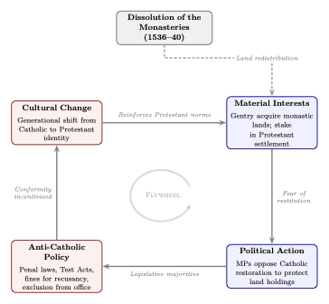
“Rents and Reformation” with Desiree Desierto and Marcus Shera
[SSRN] [CEPR]
The English Reformation produced one of the largest redistributions of landed property in European history. Between 1536 and 1541, the Dissolution of the Monasteries transferred roughly one-quarter of England's agricultural land from the Catholic Church to the Crown and subsequently to private landowners. We develop a model in which this redistribution of property created a powerful constituency with a vested interest in preventing a Catholic restoration that would have threatened their new holdings. Using data on the grantees of monastic lands, we show that the creation of these property interests cemented the Protestant settlement and helps explain why England remained Protestant despite efforts at Catholic restoration.
We show how the Dissolution of the Monasteries cemented Protestantism in England by creating a class of property owners with a vested interest in preventing a return to Catholicism.
Full abstract
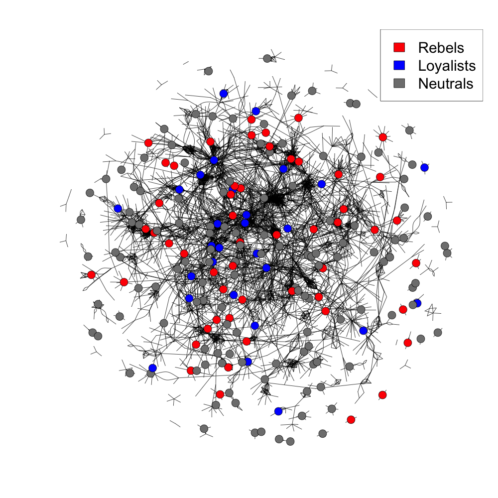
“Magna Carta” with Desiree Desierto and Jacob Hall. R&R at the Journal of the European Economic Association. [SSRN][CEPR]
Magna Carta is widely celebrated as a foundation of constitutional government, but why did the English barons coordinate to constrain King John in 1215? We model Magna Carta as an optimal agreement between rival coalitions of barons and the crown, making predictions about which barons would support and which would oppose the charter. We test these predictions using a newly collected dataset on the universe of English barons and their landholdings in 1215. Our findings suggest that Magna Carta reflected the interests of a broad coalition of barons whose landholdings gave them both the incentive and capacity to constrain royal power.
We model Magna Carta as an optimal agreement between rival coalitions of barons and test predictions using newly collected data on the universe of barons and their lands in 1215.
Full abstract
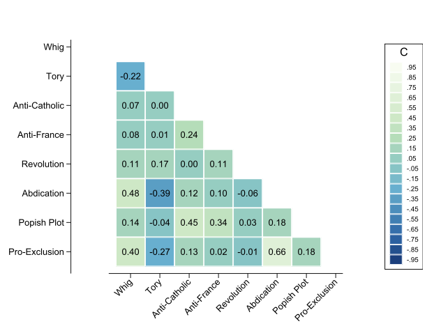
“Political and Institutional Development in England”. The Manchester School. Forthcoming.
[PDF] [SSRN] [Published Article]
This paper revisits the political and institutional development of England from the Magna Carta to the Glorious Revolution. I argue that institutional change in this period is best understood through the lens of coalition formation. Political elites had heterogeneous preferences over first two, and then three, recurring axes of disagreement: constitutional prerogatives, foreign policy, and after the Reformation, religion. Institutional change occurred when shocks caused coalitions to form, fracture, and realign. I discuss three episodes. First, due to defeat in France, a baronial coalition was able to check the power of the king through the Magna Carta. Second, the Reformation introduced religion as a new axis of conflict, ultimately giving rise to organized political parties during the Exclusion Crisis of 1679–1681. Third, the Glorious Revolution succeeded when James II's pro-Catholic policies shattered the Tory coalition that had sustained the late Stuart monarchy. Using data on 750 Exclusion Crisis MPs, I document the structure of these political alignments empirically, and discuss how the defection of Tory elites was decisive in 1688.
This paper provides a framework for studying political and institutional development in England from the Middle Ages to the Glorious Revolution.
Full abstract
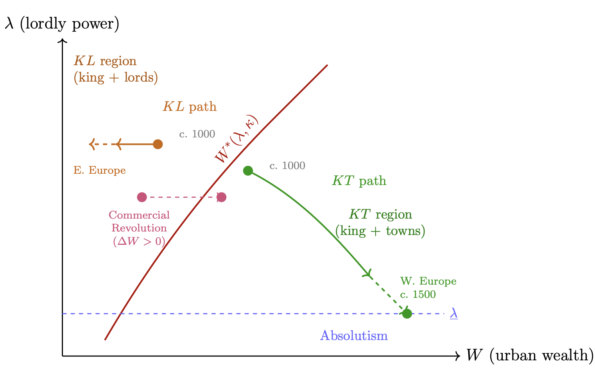
“Adam Smith and the Role of Towns in Feudal Europe”. Public Choice. 2026.
[PDF] [SSRN] [Published Article]
Adam Smith's account of medieval towns in Book III of The Wealth of Nations remains one of the most influential analyses of how commerce transformed feudal Europe. This paper formalizes Smith's argument as a game between kings, lords, and towns. The king-town alliance emphasized by Adam Smith emerges when towns are wealthy enough to offer fiscal and military support but lords remain a serious threat. However, when kings become excessively predatory, towns may ally with lords (as in the Magna Carta crisis); when towns are too weak to offer substantial support, kings ally with lords instead (as in Eastern Europe). A dynamic extension shows that the king-town equilibrium is self-undermining: commercial growth erodes lordly military power through Smith's "diamond buckles" mechanism, eventually enabling royal absolutism. In contrast, the king-lords equilibrium is self-reinforcing, suppressing urban development and preserving feudal institutions. The framework highlights how small differences in initial urban development could generate dramatically different long-run trajectories and illuminates both the brilliance and the limitations of Smith's conjectural history.
This paper formalizes Adam Smith's account of how medieval towns transformed feudal Europe, showing that the king-town alliance was self-undermining through commercial growth while the king-lords equilibrium was self-reinforcing, generating divergent long-run trajectories.
Full abstract
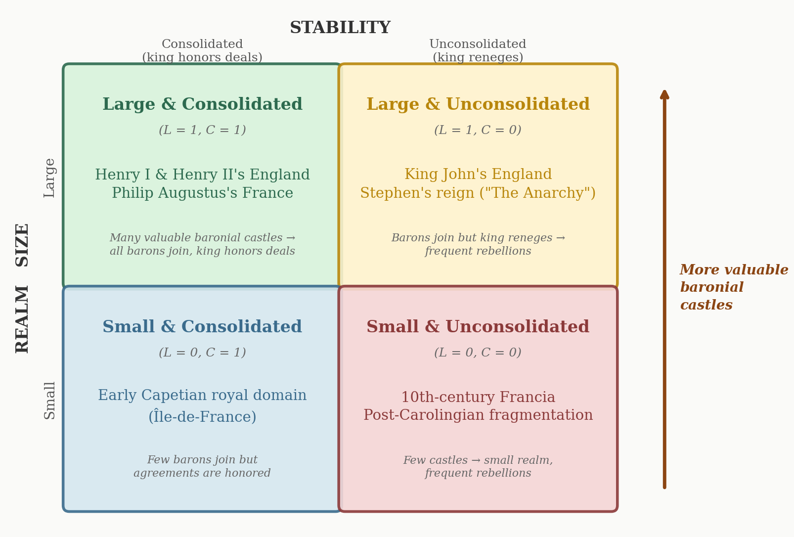
“Castles” with Desiree Desierto. European Economic Review. Forthcoming. [PDF] [Published Article]
A large political economy literature treats private fortifications as evidence of state weakness and political fragmentation. We challenge this view, arguing that castles increased the bargaining power of barons relative to the king and thereby strengthened, rather than undermined, feudal political order. In our model, castles serve as a commitment device that enables cooperative agreements between the crown and nobility by raising the costs of defection. We test our predictions using data on castle construction in medieval England and find evidence consistent with castles supporting rather than subverting political stability.
We challenge the view that private castles signaled state weakness, arguing instead that castles increased barons' bargaining power relative to the king and thereby strengthened feudal political order.
Full abstract
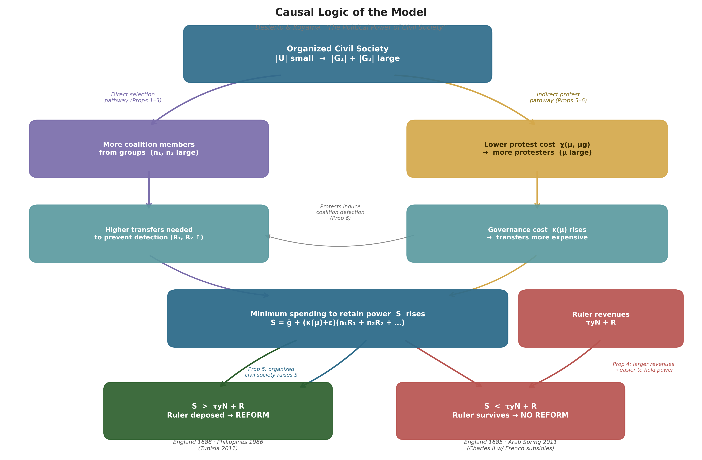
“The Political Power of Civil Society” with Desiree Desierto. The Journal of Comparative Economics. Forthcoming.
[PDF] [Published Article]
How do civil society organizations affect political reform? We develop a model in which different types of organizations — those composed solely of political actors, those composed solely of ordinary citizens, and those spanning both groups — have different capacities to drive institutional change. We show that bridging organizations, which span both political actors and ordinary citizens, are most effective at securing reform because they can credibly commit to collective action. We apply our framework to three historical episodes: the Glorious Revolution of 1688, the People Power Revolution in the Philippines, and the Arab Spring uprisings.
We model how civil society organizations affect political reform, showing that groups spanning both political actors and ordinary citizens are most effective, with applications to the Glorious Revolution, People Power, and the Arab Spring.
Full abstract
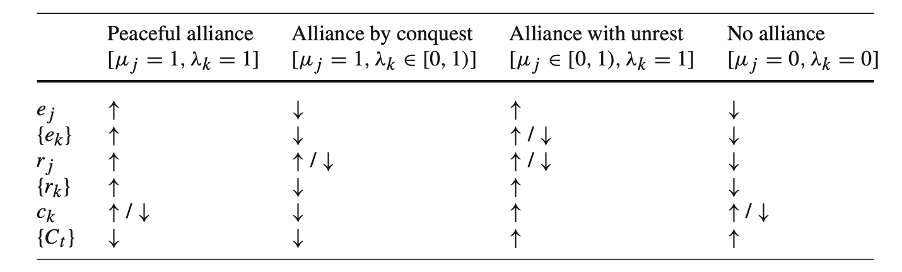
“Feudal Political Economy” with Desiree Desierto. Economic Theory Vol. 80, 619-658, 2025. [PDF] [Published Article] [SSRN] [BibTeX]
How is order achieved in a realm in which every elite commands both economic and military resources, and no stable institutions of power exist? We depict coalition formation in the feudal world as a series of non-binding agreements between elites who can move in and out of the coalition, through peaceful and violent means. We derive conditions under which the realm unites under one rule — a grand coalition, or remains fragmented. We motivate our analysis with key historical episodes in medieval Europe, from the Frankish Kingdom in the 5th to 10th centuries and England in the 11th to 15th centuries.
We model coalition formation among feudal elites with independent economic and military resources to derive conditions under which a realm unites under one rule or remains fragmented.
Full abstract
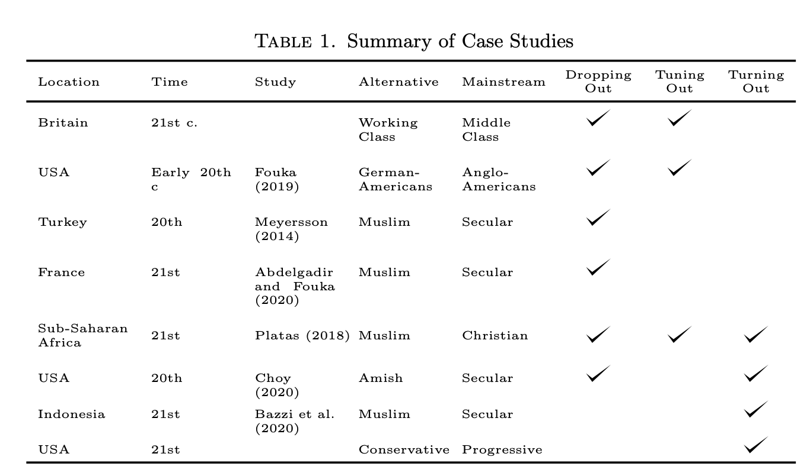
“Resisting Education” with Jean-Paul Carvalho and Cole Williams. The Journal of the European Economic Association Vol. 22, issue 6, December 2024, pp 2549–2597
[PDF] [Published Article] [SSRN] [BibTeX]
States often use public education to transmit cultural values and build national identity. We develop a model in which education can provoke resistance from communities whose values conflict with those being promoted. This resistance can take three forms: dropout from formal education, counter-socialization through alternative institutions, and collective political action. Paradoxically, we show that resistance to state-sponsored cultural transmission can increase the spread of alternative cultural traits by mobilizing communities and strengthening minority identities. Our framework helps explain why state education programs have sometimes backfired, from nineteenth-century religious resistance to modern controversies over curriculum content.
We show how education systems that transmit cultural values can provoke resistance — through dropout, counter-socialization, or collective action — that paradoxically increases the spread of alternative cultural traits.
Full abstract
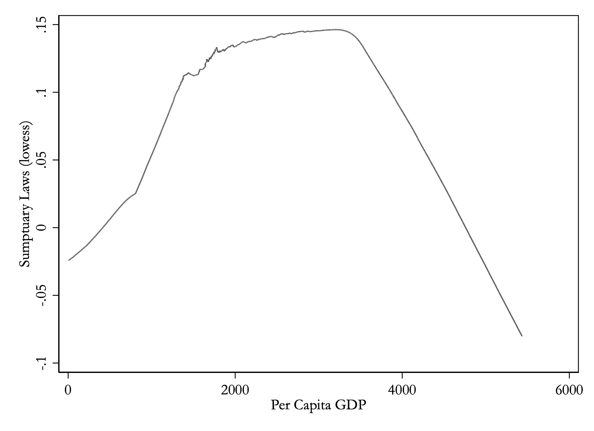
“The Political Economy of Status Competition: Sumptuary Laws in Preindustrial Europe” with Desiree Desierto The Journal of Economic History Vol. 84, issue 2, pp 479-512.
[PDF] [Published Article] [SSRN] [BibTeX]
Sumptuary laws that regulated clothing based on social status were an important part of the political economy of premodern states. We introduce a model that captures the notion that consumption by ordinary citizens poses a status threat to ruling elites. Our model predicts a non-monotonic effect of income — sumptuary legislation initially increases with income, but then falls as income increases further. The initial rise is more likely for states with less extractive institutions, whose ruling elites face a greater status threat from the rising commercial class. We test these predictions using a new dataset of country and city-level sumptuary laws.
We model sumptuary laws as a response to status threats posed by rising commercial classes and find a non-monotonic relationship between income and sumptuary legislation using a new dataset of European laws.
Full abstract
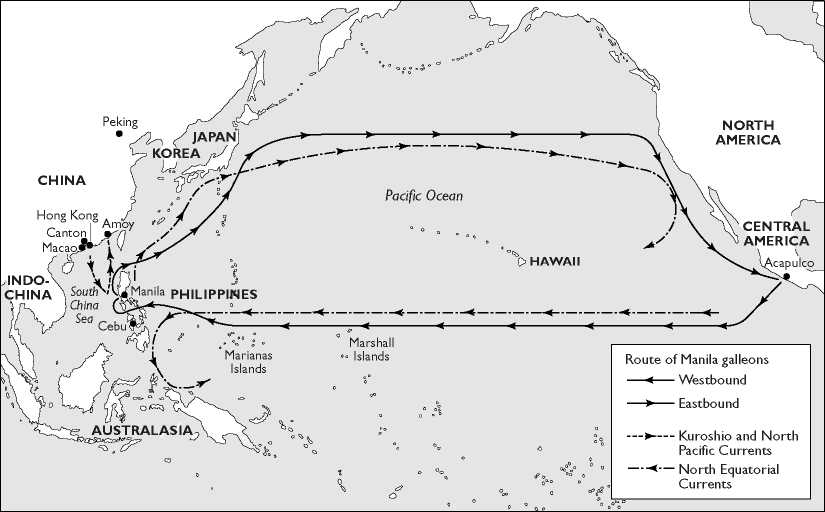
“Shipwrecked by Rents” with Fernando Arteaga and Desiree Desierto. The Journal of Development Economics Vol. 168. May 2024, 103240
[PDF] [Published Article]
[Vox talks Podcast] [Vox Article] [Planet Money]
[SSRN][CEPR] [BibTeX]
The trade route between Manila and Mexico was a monopoly of the Spanish Crown for more than 250 years. The Manila Galleons were "the richest ships in all the oceans," but much of the wealth sank at sea and remains undiscovered. We introduce a newly constructed dataset of all of the ships that travelled this route. We show formally how monopoly rents that allowed widespread bribe-taking would have led to overloading and late ship departure, thereby increasing the probability of shipwreck. Empirically, we find that ships carrying higher-value cargo were significantly more likely to be shipwrecked. Our results illustrate how institutional failures associated with monopoly rents can have large economic costs.
We show that monopoly rents on the Manila Galleon trade route led to bribery, overloading, and delayed departures that significantly increased the probability of shipwreck, especially for higher-value cargo.
Full abstract
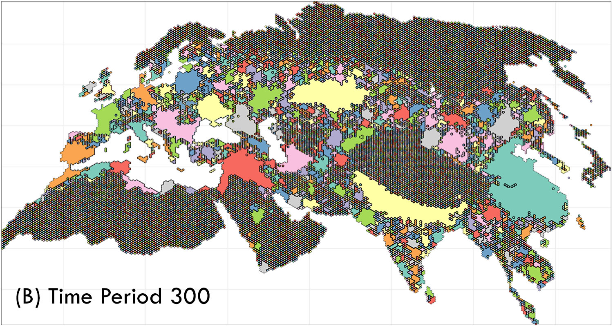
“The Fractured Land Hypothesis” with Jesús Fernández-Villaverde, Youhong Lin, and Tuan-Hwee Sng. Quarterly Journal of Economics Vol. 138, Issue 2. May, 2023, pp. 1173-1231.
[PDF] [Published Article][SSRN][Long Presentation] [Short Presentation] [BibTeX]
Patterns of political unification and fragmentation have crucial implications for comparative economic development. Diamond (1997) famously argued that "fractured land" was responsible for China's tendency toward political unification and Europe's protracted political fragmentation. We build a dynamic model with granular geographical information in terms of topographical features and the location of productive agricultural land to quantitatively gauge the effects of "fractured land" on state formation in Eurasia. We find that either topography or productive land alone is sufficient to account for China's recurring political unification and Europe's persistent political fragmentation. The existence of a core region of high land productivity in Northern China plays a central role in our simulations.
We build a dynamic model of state formation in Eurasia and find that both topography and the distribution of productive agricultural land can explain why China unified while Europe remained politically fragmented.
Full abstract
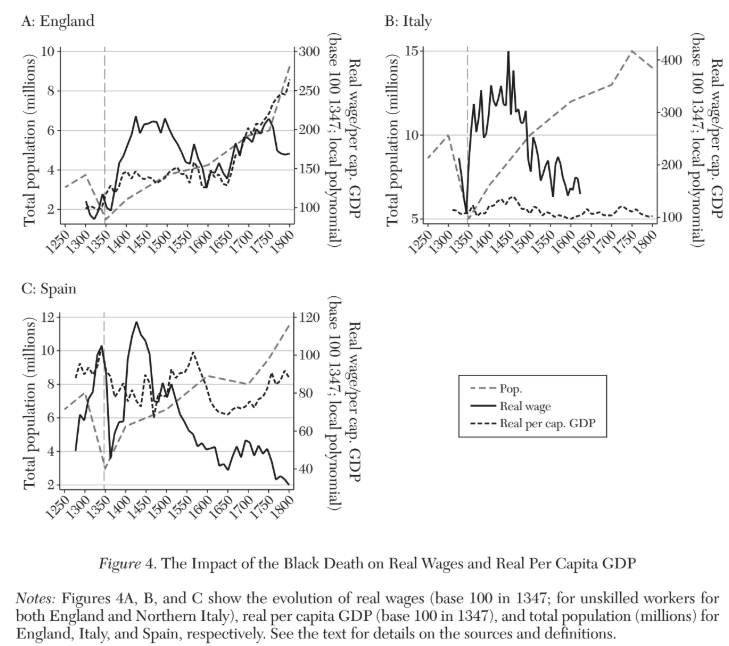
“The Economic Impact of the Black Death” with Remi Jedwab and Noel D Johnson Journal of Economic Literature, Vol 60, Number 1. March 2022.
[Published Article] [PDF] [BibTeX]
The Black Death was the largest demographic shock in European history. We review the evidence for the origins, spread, and mortality of the disease. We document that it was a plausibly exogenous shock to the European economy and trace out its aggregate and local impacts in both the short run and the long run. The initial effect of the plague was highly disruptive. Wages and per capita income rose. But, in the long run, this rise was only sustained in some parts of Europe. The other indirect long-run effects of the Black Death are associated with the growth of Europe relative to the rest of the world (the Great Divergence), a shift in the economic geography of Europe toward the northwest (the Little Divergence), the demise of serfdom in western Europe, a decline in the authority of religious institutions, and the emergence of stronger states.
We review the evidence on Europe's largest demographic shock, documenting its short-run disruption and long-run effects on the Great Divergence, the Little Divergence, serfdom, religious authority, and state formation.
Full abstract
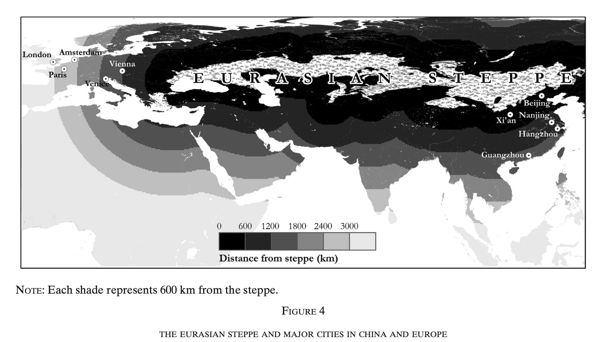
“Unified China; Divided Europe” with Chiu Yu Ko and Tuan-Hwee Sng International Economic Review, February 2018, Volume 59, Issue 1, pp 285-327
[PDF] [Published Article] [SSRN] [Slate] [The Upshot]
[slides] [BibTeX]
This article studies the causes and consequences of political centralization and fragmentation in China and Europe. We argue that a severe and unidirectional threat of external invasion fostered centralization in China, whereas Europe faced a wider variety of smaller external threats and remained fragmented. Political centralization in China led to lower taxation and hence faster population growth during peacetime compared to Europe. But it also meant that China was more vulnerable to occasional negative population shocks. Our results are consistent with historical evidence of warfare, capital city location, tax levels, and population growth in both China and Europe.
We argue that a severe, unidirectional external threat fostered political centralization in China, while Europe's diverse smaller threats sustained fragmentation, with consequences for taxation and population growth.
Full abstract
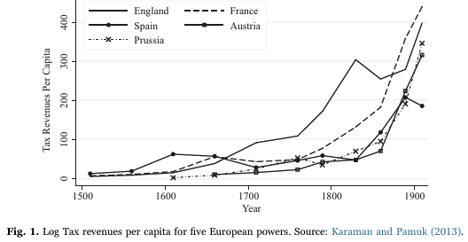
“States and Economic Growth: Capacity and Constraints” with Noel D. Johnson, Explorations in Economic History, April 2017, Volume 64, Issue 2, pp 1–20
[Published Article] [PDF] [BibTeX]
This paper surveys the literature on state capacity and economic development. We examine the historical process through which modern states acquired fiscal and legal capacity and how these developments related to economic growth. Drawing on evidence from early modern Europe and Asia, we highlight the role of interstate competition, internal political bargaining, and administrative innovations in shaping state capacity. We also consider how states can both promote and constrain economic growth, emphasizing the importance of institutional quality and the balance between state power and accountability.
We survey how economic history illuminates the process through which modern states acquired state capacity and its relationship to economic growth across Europe and Asia.
Full abstract
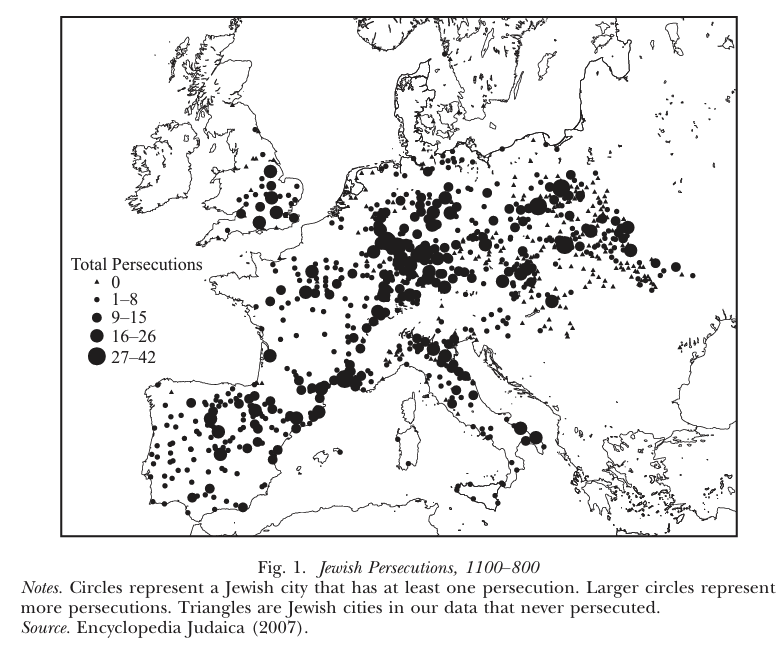
“Jewish Persecutions and Weather Shocks 1100-1800” with Warren Anderson and Noel D. Johnson Economic Journal, June 2017, Volume 127, Issue 602, pp 924-958
[Published Article] [PDF] [ssrn] [VOX] [Wired] [Tablet]
[Winner of RES prize for Best Paper Published in EJ in 2017] [BibTeX]
What factors caused the persecution of minorities in pre-modern Europe? Using panel data consisting of 1,366 persecutions of Jews from 936 European cities between 1100 and 1800, we test whether persecutions were more likely following colder growing seasons. A one standard deviation decrease in growing season temperature in the previous five-year period increased the probability of a persecution by between 1 and 1.5 percentage points (relative to a baseline of 2%). This effect was strongest in weak states and with poor quality soil. The long-run decline in persecutions was partly attributable to greater market integration and state capacity.
Using data on 1,366 persecutions across 936 European cities from 1100–1800, we show that colder growing seasons increased the probability of anti-Jewish persecution, especially in weak states and areas with poor soil.
Full abstract
Work in Progress
“Feudal Rebellion”
We provide the first quantitative evidence that a cultural norm legitimating baronial rebellion constrained medieval rulers, using text analysis of 98 French epic poems spanning 1100–1400 to show that rebellion sympathy declined as royal power consolidated.
“Salt Wars: Resource Appropriability and Political Fragmentation in Premodern Europe” with Desiree Desierto and Patrick Fitzsimmons.
Using a new dataset of 269 salt mine locations matched to over 600 historical polities, we show that salt endowments fueled interstate conflict and political fragmentation rather than state consolidation in Europe from 1100 to 1790.
“The Dynamics of Ideology” with Desiree Desierto and Patrick Fitzsimmons.
“The Birth of Parties” with Desiree Desierto.
Full List of Papers
Book Chapters
8. “Frank Herbert's Dune” in François Bourguignon, Avinash Dixit, Luc Leruth, and Jean-Philippe Platteau's Economics and Literature: A Novel Approach. Routledge. 2025. [SSRN][Substack summary]
7. “Institutional Change” with Desiree Desierto Handbook of New Institutional Economics Edited by Claude Diebolt and Mary Shirley, Oxford University Press. 2025.
6. “Legal Capacity in Historical Political Economy” Oxford Handbook of Historical Political Economy Edited by Jeffrey A. Jenkins and Jared Rubin. Oxford University Press. 2023. [SSRN]
5. “Political Economy” The Handbook of Cliometrics, edited by Michael Haupert and Claude Diebolt, Springer 2020. [Draft]
4. “Economic History” The Routledge Companion to Jewish History and Historiography, edited by Dean Phillip Bell, Routledge 2019. [PDF] [Book]
3. “The State, Toleration, and Religious Freedom” with Noel D. Johnson, in Iyer, Rubin and Carvalho (Eds.), Advances in the Economics of Religion, 2018, Palgrave. [SSRN]
2. “Analytical Narratives” An Economist's Guide to Economic History, edited by Matthias Blum and Christopher Colvin, pp 371-378 [Book]
1. “Establishing a New Order: The Growth of the State and the Decline of Witch Trials in France” with Noel Johnson and John V.C Nye in Institutions, Innovation, and Industrialization: Essays in Economic History and Development, edited by Avner Greif, Lynne Kiesling, and John V. C. Nye [SSRN][Amazon]
Book Reviews and Review Essays
21. “Pox Romana: The plague that shook the Roman world, by Colin Elliott” Economic Affairs, Volume 44, 2, June 2024, pp 460–463 [Published Article]
20. “Are Economic Freedom and Political Unfreedom Compatible? A Review of Markets with Chinese Characteristics” Econ Journal Watch, September 2024, Volume 21, issue 2, pp 426-428 [Published Article]
19. “Review of Stephen Broadberry and Kyoji Fukao's (eds) The Cambridge Economic History of the Modern World: Vol. I and II.” Economic History Review, February 2024 Volume 77, 1 pp 317-318 [Published Article]
18. “A Review of Hilton L. Root's Network Origins of the Global Economy: East vs. West in a Complex Systems Perspective.” Public Choice, June 2021, Volume 187, 3-4, pp 533-535. [Published Article]
17. “A Review of Peer Vries's Averting a Great Divergence: State and Economy in Japan, 1868-1937,” EH.Net, May 2020. [Published Article]
16. “A Review Essay on the European Guilds.” Review of Austrian Economics, March 2020, Volume 33, pp 277–287 [SSRN] [Published Article]
15. “A Review of Nicholas Crafts's Forging Ahead, Falling Behind and Fighting Back: British Economic Growth” Economic History Review Volume 72, Issue 2 May 2019 pp 774-775 [Published Article]
14. “A Review of Daniel Ziblatt's Conservative Parties and the Birth of Democracy,” Journal of Economic History, Volume 78, Issue 2. pp.940-942. September 2018 [Published Article]
13. “A Review of From Warfare to Wealth: The Military Origins of Urban Prosperity in Europe by Mark Dincecco and Massimiliano Onorato.” EH.net February 2018. [Published Article]
12. “A Review of A Culture of Growth by Joel Mokyr” The Independent Review Volume 22 Number 3. Winter 2018 [PDF] [Published Article]
11. “A Review of WTF?!: An economic tour of the weird by Peter T. Leeson.” Review of Austrian Economics March 2019, Volume 32, Issue 1, pp 81–84 [Published Article] [PDF]
10. “A Review of Economic History of Warfare and State Formation by Jari Eloranta, Eric Golson, Andrei Markevich, and Nicholas Wolf” EH.net September 2017. [Published Article]
9. “A Review of The Great Leveler: Violence and the History of Inequality From the Stone Age to the Twenty-First Century by Walter Scheidel” Public Choice Volume 172, Issue 3–4, pp 545–548. September 2017 [Published Article] [PDF]
8. “A Review of Ultrasociety by Peter Turchin” Journal of Bioeconomics, Volume 18, Issue 3, pp 239–242. October 2016 [Published Article] [PDF]
7. “A Review of The Rise of Market Society in England 1066-1800 by Christine Eisenberg” Journal of Economic History, Vol 72, 3, pp. 931-933. September 2015 [JEH] [PDF]
6. “A Review of the History Manifesto by Jo Guldi and David Armitage” Journal of Economic History, Vol. 75, 2, pp. 584-587. June 2015 [Published Article][SSRN] [PDF]
5. “A Review of Rationalism, Pluralism, and Freedom” Public Choice, Vol. 163, N. 3, pp. 409-412, May 2015 [PDF]
4. “Preindustrial Cliometrics: A Review Article.” Economic Affairs Vol. 33, 2, pp. 268-279 2013 [Published Article] [PDF]
3. “Review of Timur Kuran's The Long Divergence” Public Choice Vol. 154, Issue 3-4, pp 341-343 March 2013 [Published Article]
2. “Review of Douglas W. Allen's The Institutional Revolution” EH.net [Published Article]
1. “Review of James K. Galbraith's The Predator State.” Economic Affairs Vol. 29, 1 March, 2009 [Published Article]